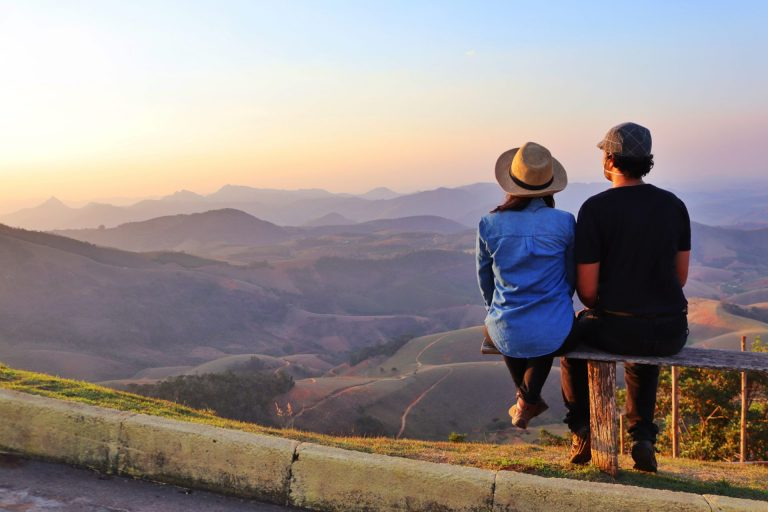

Circuito Caravaggio em Santa Teresa - ES
O que vamos encontrar?
Alta gastronomia


Nela, poderá comprar diversos produtos de produção própria como vinhos, licores, café torrado, geleia e sucos.Também pode agendar uma visita às parreiras, que ficam em outro lugar, pra conhecer o processo de fabricação. As próximas atrações ficam no Circuito Caravaggio, que começa logo numa entrada na ES-261 e segue por 14km em belas estradas de serra. Vamos lá?
Uma vista de tirar o fôlego


O ponto máximo da Rota do Caravaggio. Uma rampa de vôo livre onde as pessoas podem fazer vôo de parapente, comprar algo pra degustar, ou então simplesmente ficar de boa olhando a paisagem. No nosso caso, fomos lá para ver o pôr-do-sol. E foi maravilhoso!
Referências da Cultura Italiana

Ficarão absolutamente encantados com a Rua do Lazer!Com construções ao estilo italiano conservadas, fiação subterrânea e revitalização recente, é uma delícia andar lá. Aliás, devo dizer que fiação subterrânea é o grande prazer do turista moderno, né?
Tem vários restaurantes para quem quiser almoçar ou jantar. Vale a visita!
Festivais
Quase toda semana a cidade é comtemplada por festivais. Nesse ano de 2022 a cidade já festejou com os festivais de: Jazz, da primavera, da cultura italiana, gastronomico e muito mais.
Caso queira aproveitar mais dos festivais que teremos pela frente, veja a lista que preparamos para você!!